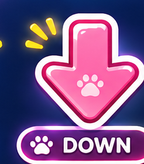
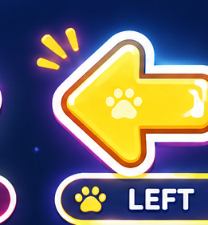
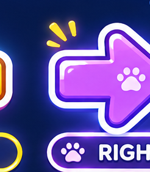
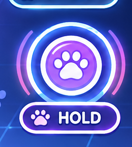
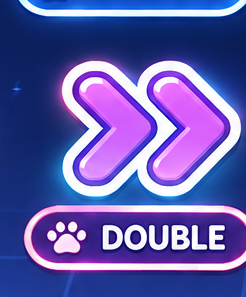
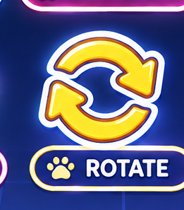
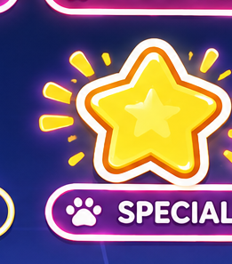
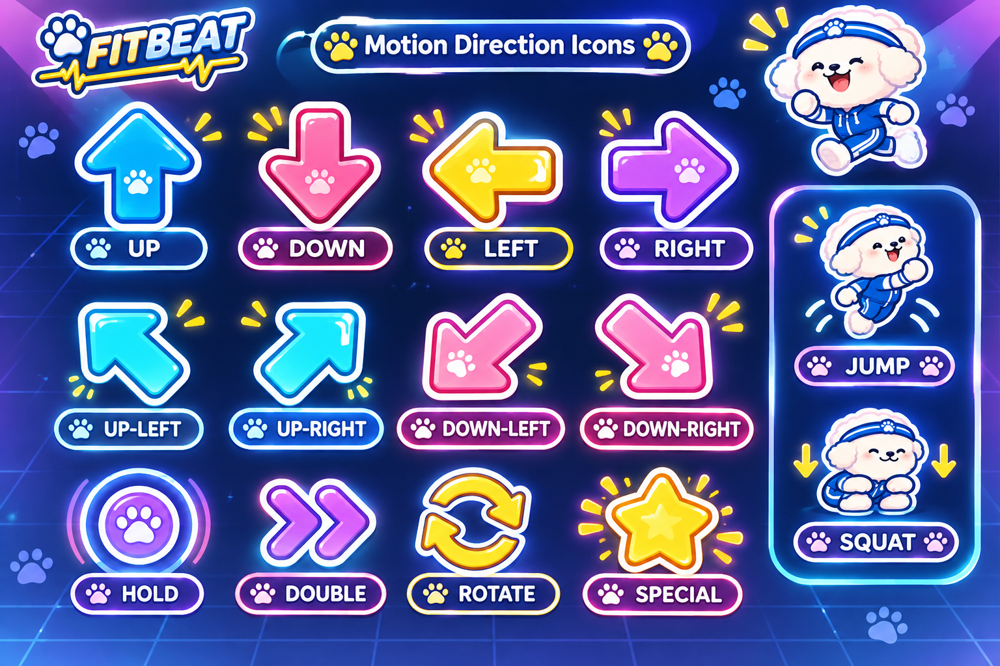
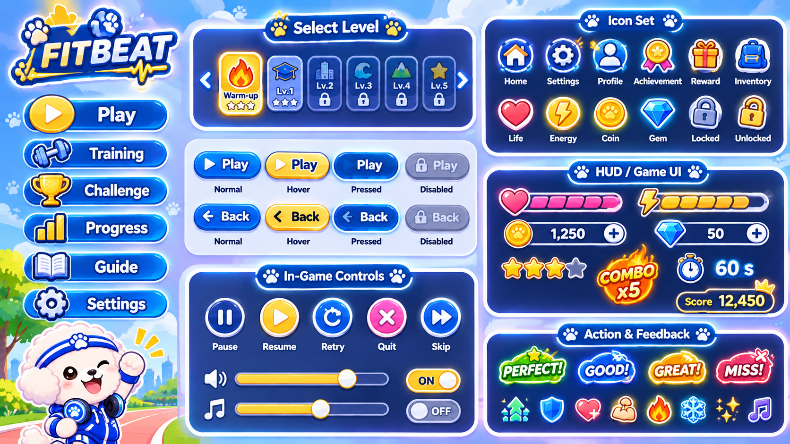

FITBEAT — Approved UI Reference Review
ไฟล์ชุดนี้ใช้ตรวจภาพต้นแบบที่เลือกไว้ ยังไม่ใช่ภาพ PNG โปร่งใสที่แยกชิ้นเพื่อใช้ในเกมจริง และยังไม่ได้แก้โค้ดเกม
Motion direction previews
UP
Crop preview — not transparent production asset
DOWN
Crop preview — not transparent production asset
LEFT
Crop preview — not transparent production asset
RIGHT
Crop preview — not transparent production asset
HOLD
Crop preview — not transparent production asset
DOUBLE
Crop preview — not transparent production asset
ROTATE
Crop preview — not transparent production asset
SPECIAL
Crop preview — not transparent production assetOriginal approved motion sheet

Original approved menu & button sheet

หมายเหตุ: เกม FITBEAT ใช้ UP, DOWN, SIDE, FORWARD เป็นท่าหลัก ขณะที่ภาพต้นแบบล่าสุดมี LEFT/RIGHT และท่าอื่น ๆ จึงต้องออกแบบ SIDE/FORWARD ให้ตรงกับสไตล์นี้ก่อนนำไปใช้จริง